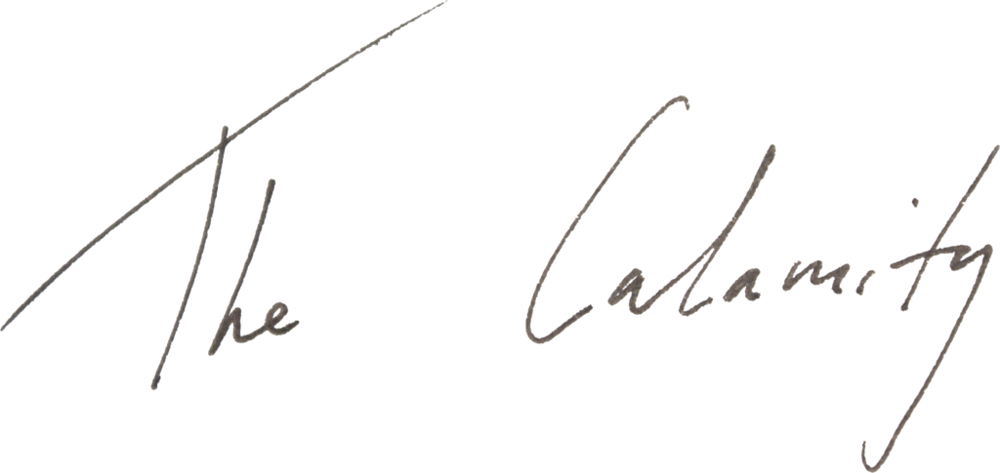

Now muse, let us sing of space hardware...
https://soundcloud.com/itsacalamity/satellites
I wrote Satellites in 'the attic period', and it is one of the oldest songs on the album, from 2016. The chord progression is older still - I recycled it from a pre-Calamity song which hadn't seen the light of day since 2013.
The song is about the all-pervasive media age, the social medias, the mass medias... 'like poison dripping down'... Comes from a similar 'fear and dread' type mindset which informed 'I Fell Asleep', a song off The Calamity EP about fears of impending apocalypse.
Trawling through clips of the news to sample for the recording, I came across a clip of Nick Robinson, I think, one of those BBC types. He was talking of 'our desire to communicate, to have instant information, to be connected at all times'.
But DO we desire these things? Do they make us happy? Or is this a representative of a news corporation telling us what we desire (more news, apparently)? Who even is Nick Robinson?
To take these questions in order: its complicated; mostly no; definitely yes; corporate droid.
Plug yourself into the machine kids. It's for your own good.
12/3/21